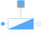
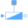

VariableAdmittanceMultiphase variable admittance |

|
Diagram
{kind=link}
Information
This information is part of the Modelica Standard Library maintained by the Modelica Association.
The admittance model represents a parallel connection of a resistor and either a capacitor or inductor
in each phase.

The linear admittance connects the complex voltage v with the
complex current i by v*Y = i in each phase,
using m
variable singlephase admittances.
The admittances Y_ref = G_ref + j*B_ref are given as complex input signals, representing the
resistive and reactive components of the input admittances. The resistive
components are modeled temperature dependent, so the real part G_actual = real(Y) are determined from
the actual operating temperatures and the reference input conductances real(Y_ref).
Conditional heat ports are considered.
The reactive components B_actual = imag(Y)
are equal to imag(Y_ref) if frequencyDependent = false.
Frequency dependency is considered by frequencyDependent = true, distinguishing two cases:
- (a)
imag(Y_ref) > 0: capacitive case - The actual susceptances
B_actualare proportional tof/f_ref - (b)
imag(Y_ref) < 0: inductive case - The actual susceptances
B_actualare proportional tof_ref/f
Note
Zero crossings of the real or imaginary parts of the admittance signals Y_ref could cause
singularities due to the actual structure of the connected network.
See also
VariableResistor, Resistor, Conductor, Capacitor, Inductor, Impedance, Admittance, Variable conductor, Variable capacitor, Variable inductor Variable impedance,
Parameters (7)
| mh |
Value: m Type: Integer Description: Number of heatPorts=number of phases |
|---|---|
| useHeatPort |
Value: false Type: Boolean Description: =true, if all heat ports are enabled |
| T |
Value: T_ref Type: Temperature[mh] (K) Description: Fixed device temperatures if useHeatPort = false |
| T_ref |
Value: fill(293.15, m) Type: Temperature[m] (K) Description: Reference temperatures |
| alpha_ref |
Value: zeros(m) Type: LinearTemperatureCoefficient[m] (¹/K) Description: Temperature coefficient of resistance (R_actual = R_ref*(1 + alpha_ref*(heatPort.T - T_ref)) |
| frequencyDependent |
Value: false Type: Boolean Description: Consider frequency dependency, if true |
| f_ref |
Value: 1 Type: Frequency (Hz) Description: Reference frequency, if frequency dependency is considered |
Connectors (4)
| plug_p |
Type: PositivePlug Description: Positive quasi-static polyphase plug |
|
|---|---|---|
| plug_n |
Type: NegativePlug Description: Negative quasi-static polyphase plug |
|
| heatPort |
Type: HeatPort_a[mh] Description: Conditional heat ports |
|
| Y_ref |
Type: ComplexInput[m] Description: Variable complex admittances |
Components (5)
| v |
Type: ComplexVoltage[m] Description: Complex voltage |
|
|---|---|---|
| i |
Type: ComplexCurrent[m] Description: Complex current |
|
| plugToPins_p |
Type: PlugToPins_p |
|
| plugToPins_n |
Type: PlugToPins_n |
|
|  | variableImpedance |
Type: VariableAdmittance[m] |